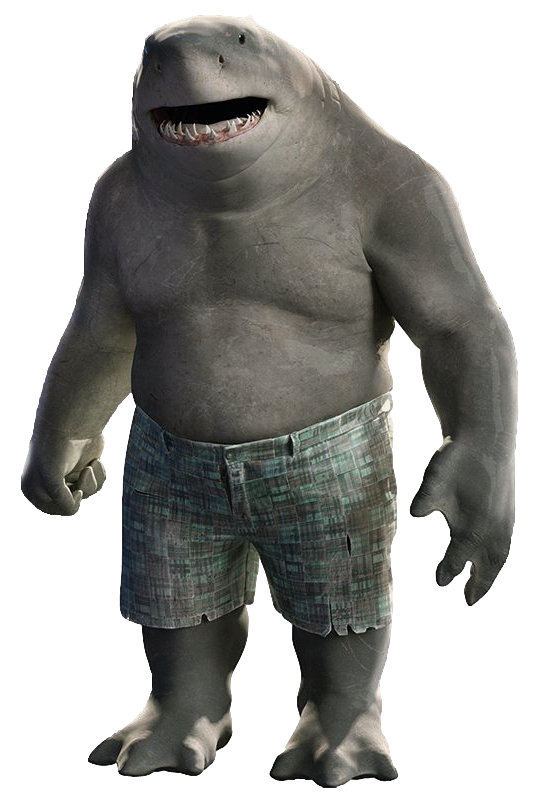

O Tubarão-Rei (também conhecido como Nanaue) é um personagem fictício do Universo DC e um dos grandes inimigos do super-herói Aquaman. Fez parte de uma das formações do Esquadrão Suicida (HQ) e apresentado pela primeira vez em Live-Action na segunda temporada da série The Flash e agora no filme O Esquadrão Suicida, dirigido pelo visionário James Gunn e lançado esse ano. Nanaue foi dublado por ninguém menos que Sylvester Stallone!
Criado por Karl Kesen e publicado pela DC Comics. O personagem apareceu brevemente na edição #0 do volume 4 do Superboy. Uma segunda aparição mais longa dele, foi vista na edição #9.
🐬🐬🐬🐬🐬🐬🐬🐬🐬🐬🐬🐬🐬🐬🐬🐬🐬🐬🐬🐬🐬🐬🐬🐬🐬🐬🐬🐬🐬🐬🐬🐬🐬🐬🐬🐬🐬🐬🐬🐬🐬🐬🐬🐬🐬🐬🐬🐬🐬🐬🐬🐬🐬🐬🐬🐬🐬🐬🐬🐬🐬🐬🐬🐬🐬🐬
Caso você queira assistir o filme de maneira justa e legal, aqui está o site para a compra de ingressos para assistir o filme em algum cinema de sua preferência:
Ingresso.com/o-esquadrao-suicida
Mas caso você seja um daqueles pirateiros de plantão que só gosta de assistir o filme em casa, eis aqui o link do filme para você baixar no torrent (os links estão sem os protetores cheio de anúncios, é só clicar que você será redirecionado para o uTorrent):
Filme legendado e em 4K (17 GB)
Filme dual-áudio e em 1080p (2,9 GB)
🐬🐬🐬🐬🐬🐬🐬🐬🐬🐬🐬🐬🐬🐬🐬🐬🐬🐬🐬🐬🐬🐬🐬🐬🐬🐬🐬🐬🐬🐬🐬🐬🐬🐬🐬🐬🐬🐬🐬🐬🐬🐬🐬🐬🐬🐬🐬🐬🐬🐬🐬🐬🐬🐬🐬🐬🐬🐬🐬🐬🐬🐬🐬🐬🐬🐬